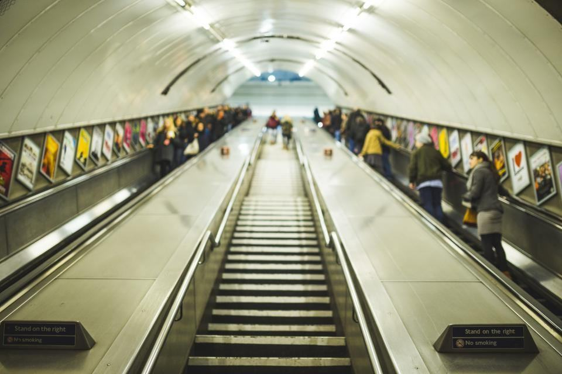

Hissen som drar halva strömmen
En hiss från åttiotalet står i viloläge 95 procent av dygnet och drar ström hela tiden. Vi mäter, moderniserar och visar besparingen i kilowattimmar.
Fastighetsägare om besparingen
”Vi trodde att hissarna var en liten post på elräkningen. Mätningen visade att de stod för nästan en femtedel av fastighetselen.”
Olof G. · Karlskrona”Kalkylen sa sju års återbetalning och efter första året ser det ut att bli sex. Det är sällan offerter håller så bra.”
Sanna D. · Kalmar”Vi kunde lägga in hissarnas klimatdata direkt i årsredovisningen. Revisorn var nöjd.”
Var vill ni börja?
Mät, räkna, bygg, mät igen
- 1

Mätning
En loggande mätare sitter på hissen i fyra veckor och registrerar varje tur och varje viloperiod.
- 2

Kalkyl
Ni får åtgärdsförslag med investering, besparing i kronor och kilowattimmar och återbetalningstid.
- 3

Modernisering
Vi genomför åtgärderna och använder återbrukade komponenter där det går, med full garanti.
- 4

Mätning igen
Tre månader efter montaget mäter vi på nytt och redovisar det faktiska utfallet.
Mätt och sparat

Teleborg sparar 41 000 kWh per år
Tolv hissar i en bostadsrättsförening fick LED, viloläge och regenerativ drivning – och elräkningen sjönk direkt.
Läs mer
Solceller på verkstadstaket
Taket i Bäckaslöv producerar nu ungefär lika mycket el som våra servicebilar förbrukar under ett år.
Läs mer
Återbruk passerar 30 procent
Nästan var tredje reservdel vi monterade under 2025 hade redan suttit i en annan hiss.
Läs mer

Hissar med siffror före och efter
- Utfört

Brf Teleborgs Höjder
Tolv hissar från 1974 som tillsammans drar 41 000 kWh mindre per år.
- Utfört

Kalmarsunds Studentbostäder
Tjugotvå hissar med mycket trafik och energirapport till bolagets hållbarhetsredovisning.
- Utfört

Ljungby Kommunfastigheter
Mätning av 18 hissar i skolor och äldreboenden som grund för en femårsplan.
- Utfört

Örlogsstadens Fastigheter
Fyra hissar i ett kontorshus på Trossö, med regenerativ drivning som matar tillbaka till huset.
- Pågående

Alvesta Vårdboenden
Två sängliftar moderniseras med återbrukade dörrmotorer och nya styrsystem.
- Utfört

Småländska Trähus
Varuhiss i en fabrikshall där vi sänkte viloeffekten från 900 till 60 watt.

”Ingen ringer och klagar på en hiss som drar för mycket ström. Därför har den här kostnaden fått hålla på i decennier utan att någon märkt den.”